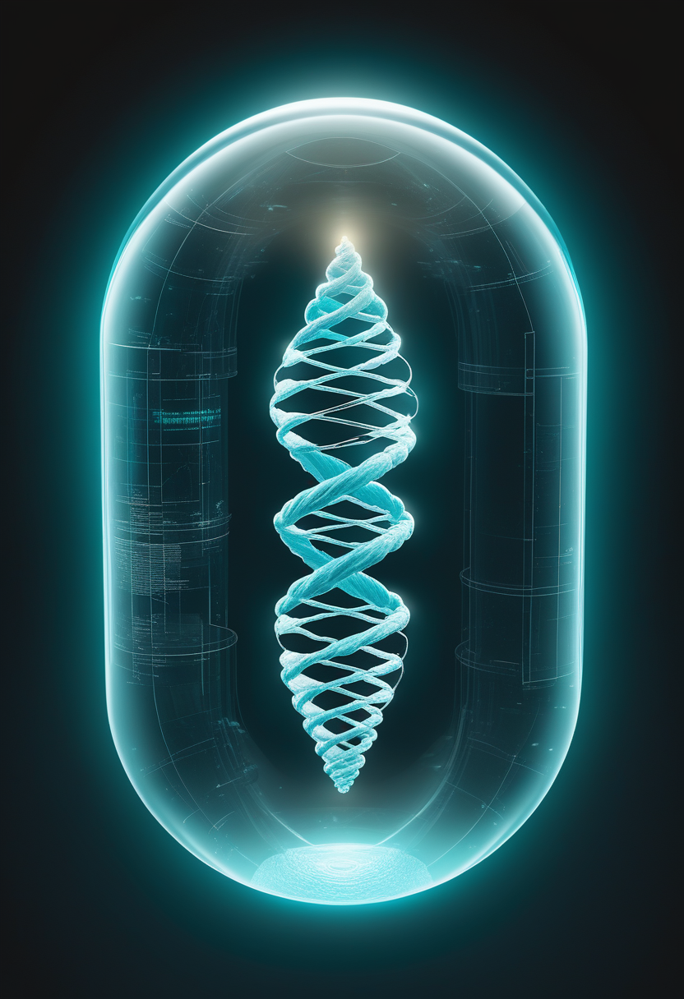
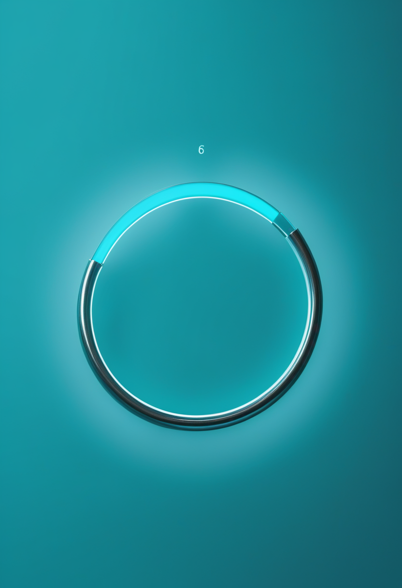
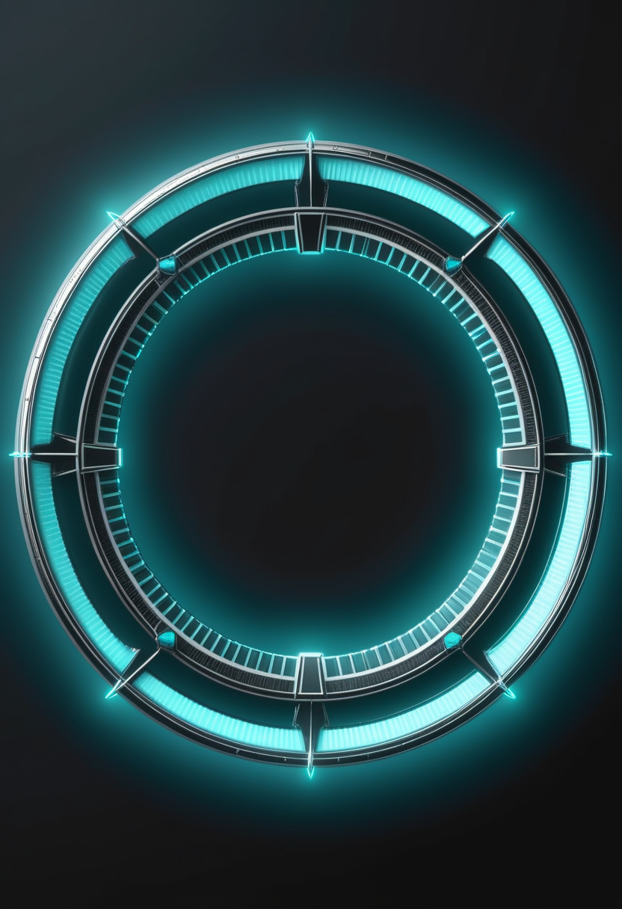
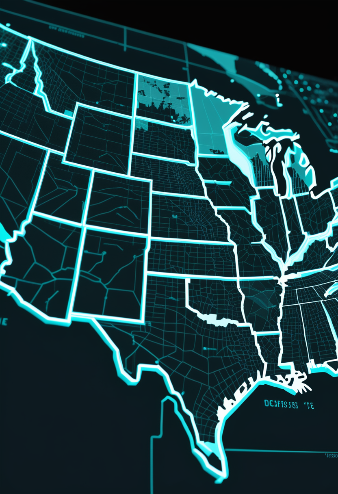
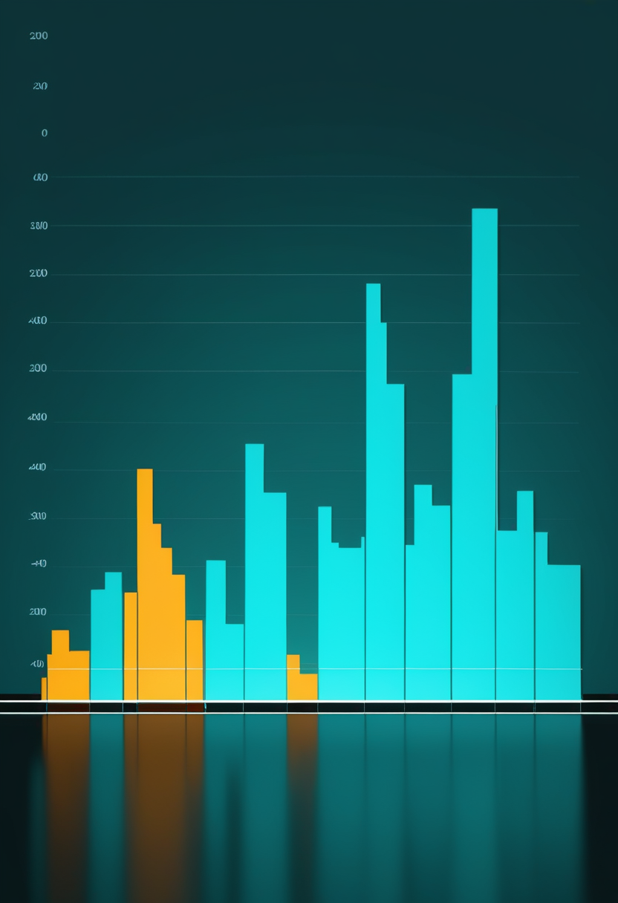
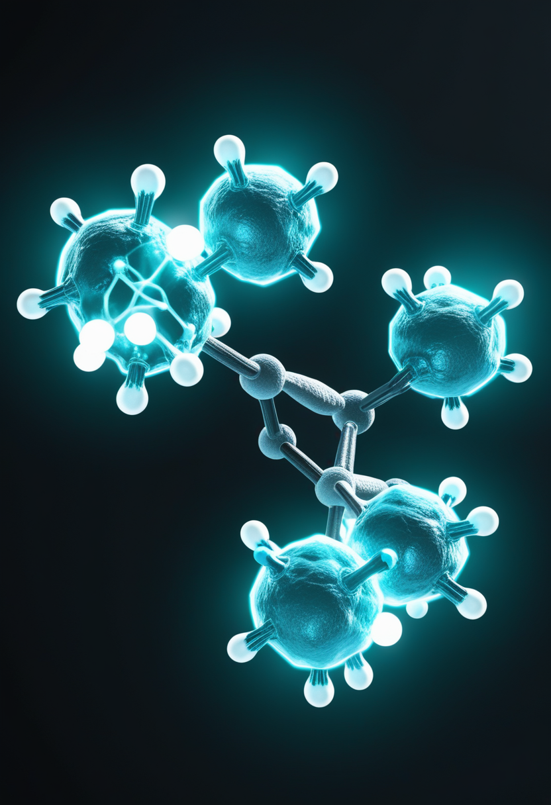
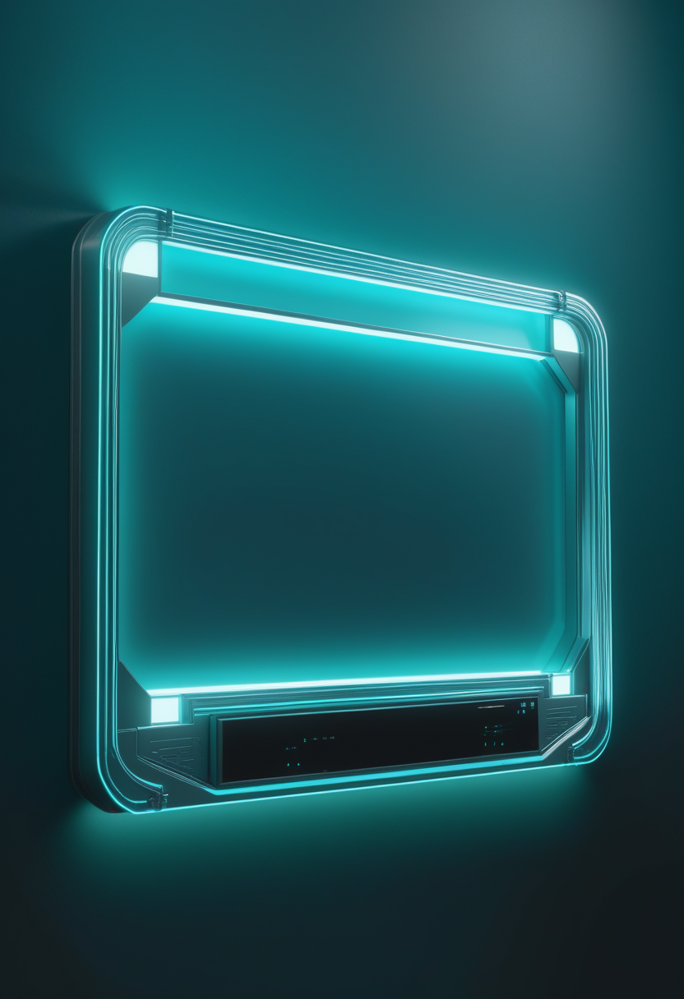
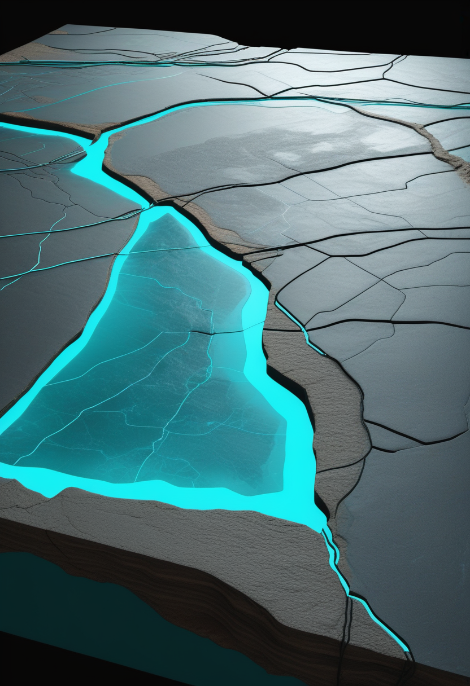

SMAの遺伝子治療ゾルゲンスマで腫瘍9件の報告。中国はBCIの上場・標準・大会を同時に進め、宇宙ステーションは絶対零度に最も近い人工の物質をつくった。
米製薬ノバルティスは、2019年に承認された脊髄性筋萎縮症(SMA)の遺伝子治療ゾルゲンスマについて、治療を受けた患者で腫瘍の報告を計9件受けたと明らかにした(11/5、各社報道)。7件はこれまで公表されていなかった。9件のうち2件では、遺伝子を運ぶウイルスベクター(AAV9)のDNAが患者自身のDNAに組み込まれた証拠が見つかり、治療との関連が疑われている。1件は治療と無関係とみられ、残る6件は評価中。治療を受けた人は世界で6,000人を超え、報告の頻度は今のところ低い。会社は各国の規制当局に報告済みで、次の対応を協議中という。添付文書はもともと腫瘍を「理論上のリスク」として記載しており、因果関係はまだ確定していない。STATは、この情報が一部の患者家族の『利益とリスクの計算』に影響しうると分析した。
ノバルティスは2019年の承認以来、ゾルゲンスマ治療を受けた患者の腫瘍の報告を9件受けたと明らかにした(11/5)。7件は新たに公表された。2件はAAV9ベクターのDNAが患者のDNAに組み込まれた証拠があり治療との関連が疑われ、1件は無関係、残る6件は評価中。治療を受けた人は世界で6,000人超。会社は各国当局に報告済みで対応を協議中。添付文書は以前から腫瘍を『理論上のリスク』として記載しており、因果関係の確定はまだ先。
英国の患者団体SMA UKと同国の多職種専門チームは11/4、9件のうち3件は病理検査が終わり、2件はゾルゲンスマとの関連が疑われ、1件は無関係とみられると説明した。米国の筋ジストロフィー協会(MDA)は、腫瘍の種類や発生時期など分かっていないことが多いとして、ノバルティスに追加情報を求める声明を出した。家族の側からは、会社の情報開示が後出しだったとの不満も出ている。

ゾルゲンスマの米国添付文書には、承認後の腫瘍報告とAAVベクターのDNA組み込みによる『理論上の腫瘍リスク』が以前から記載され、重い肝障害の警告もある。2歳以上向けの髄注版(米国名Itvisma、日本は2026年4月承認)は同じ有効成分で濃度が異なる製剤だが、今回の報告が髄注版によるものとの情報は見つからなかった。日本では静注版が2020年3月に承認済み。PMDAやノバルティス ファーマからの新しい発表は今号では確認できなかった。遺伝子治療は『一度きり』だからこそ、治療を受けた家族はまず主治医と定期検査の計画を確認したい。
遺伝子治療は一度きりの治療だからこそ、何年も先までの経過観察が欠かせない。治療を受けた家族は、まず主治医と定期検査の計画を確認したい。次の焦点は規制当局の判断と添付文書の見直し。
21世紀経済報道(11/6)は、中国のBCI産業が『加速期』に入ったと伝えた。上海の阶梯医疗(StairMed)は11/3までに上場準備の指導登録を済ませ(前号既報)、華泰聯合証券と指導契約を結んだのは10/30。強脳科技(BrainCo)、博睿康(Neuracle)、术理創新に続き、今年少なくとも4社目の上場の動きとなる。財聯社によると、阶梯医疗の9月までの累計調達額は26億元(強脳科技は25億元)。北京・昌平では11/19〜22に『2026脳機接口大会』が開かれる。

中国が主導してまとめたBCIの国際標準(ISO/IEC、10/24号既報)について、国家標準化管理委員会は11/6、応用を『意図の読み取り』から『閉ループでの調整』まで5つの類型に整理したと説明した。標準は『BCIとは何か・どう使うか・どんな機能か・どう実現するか』の4つの問いで枠組みを作り、イタリア・韓国・英国・米国・日本など10か国以上の専門家が参加した。5類型それぞれの定義の詳細は今号では確認できていない。
米Cognixionは11/4、ALS(筋萎縮性側索硬化症)患者向けのウェアラブル型BCIコミュニケーション機器について、米NIH傘下機関(NIDCD、助成番号R44DC023888)の支援を受けた実証研究の参加者登録を始めたと発表した。非侵襲のBCIと光学シースルー型ARグラスを組み合わせ、視線の動きに頼らずAIが文脈を読み取る『AI Context Engine』などを備える。米国内のALS患者30人を対象に、自宅で12週間、現行の視線入力タブレット・本機器・タッチスクリーンの3手段を使い分けてもらい、自発的に費やした時間を比較する。機器は治験段階でFDA未承認。
中国はお金・ルール・発表の場を同時に整え、米国では視線に頼らない新しい通信手段の実証が動き出した。進む方向は違うが、どちらも『選択肢を増やす』方向の前進。

米CDCの11/6の更新で、2026年の麻疹確定例は5,182例となった。前号(10/29時点、4,852例)から1週間余りで330例増え、1991年(9,643例)以来の多さ。45州とワシントンDCで報告されている。死者はCDC集計で4人だが、州発表を合わせると8人(ペンシルベニア6人、ニューヨーク1人、ウィスコンシン1人)で、CDCは『数字は変わりうる』としている。汎米保健機構(PAHO)の委員会は11/10〜13、米国の『麻疹排除』の地位を見直す予定。

厚生労働省が11/6に公表した第44週(10/26〜11/1)の全国の定点当たり報告数は10.26人で、前週(第43週、9.49人)から0.77人増え、注意報の目安の10人を3週ぶりに上回った。都道府県別では愛媛県27.89人が最多で、北海道21.90人、岩手県17.17人が続き、33道県で前週より増えた。報告数は3万8,205人で、前年同期(5万7,424人)を今季初めて下回ったが、例年より1か月以上早く流行入りしており高い水準が続く。
DRC保健省によると、10/30の1日だけでイトゥリ州34例、北キブ州25例、オー・ウエレ州4例の計63例が新たに確定した。10/30時点の累計は確定10,414例・死者5,372人(致死率51.6%、前号までの集計から大きな変化なし)で、震源のイトゥリ州が確定例の約7割を占める。米CDCのまとめでは11/3時点で確定約1万700例(二次情報、要確認)。前号で伝えた専用ワクチン2種の試験追加は、DRC当局の承認待ちのまま。
米国の麻疹とエボラは数字が増え続け、日本のインフルエンザは例年より早い流行が続く。来週のPAHOの判断とエボラのワクチン試験の承認が次の焦点。
中国宇宙ステーション天宮の実験モジュール『夢天』にある超冷原子実験装置で、約2万個のルビジウム原子を、絶対零度よりわずか9.7ピコケルビン(1兆分の9.7度)高いだけの温度まで冷やすことに成功した(誤差7.0〜12.9ピコケルビン)。これまでの記録は地上の落下塔実験の38ピコケルビン、国際宇宙ステーションの装置の52ピコケルビンで、約4分の1に下げた。原子の雲を7秒間観測でき、専門家は『観測時間の長さこそ重要』と評価する。中国科学院空間応用工程・技術センター、北京大学、上海光学精密機械研究所のチームによる成果で、Science誌に掲載された(11/5〜6)。

Lancet誌11/7号に、HER3を標的とする抗体薬物複合体ruzaltatug rezetecan(SHR-A2009)の第3相試験HERON-Lung01の中間解析が掲載された。EGFR遺伝子変異があり分子標的薬が効かなくなった進行非小細胞肺がんの患者を対象に、化学療法と比較した無作為化・非盲検の中国国内試験。がんが進まない期間(PFS)の中央値は8.3か月対5.4か月(ハザード比0.47)。全生存期間はまだ確定していない。恒瑞医薬(Hengrui)との関連や症例数・安全性の詳細は、この実行環境からは確認できなかった(要確認)。
インド科学大学院大学(IISc)のゼニア・ズライク氏らは、恒星の進化を追うシミュレーションコード『STARS』に磁場と冷却の効果を組み込み、主系列星から白色矮星への進化と、連星での質量降着までを追った。強い磁場を持つ炭素・酸素白色矮星は、太陽質量の約2.4倍まで成長しうるとの結果が得られ、従来の上限(チャンドラセカール限界、約1.4太陽質量)を大きく超える。質量を得るほど星は収縮して密度が増し、磁場が強まって重力に対抗する圧力を生むという仕組み。成果はThe Astrophysical Journal Lettersに掲載され、異常に明るい超新星爆発の説明や宇宙膨張の測定にも関わる可能性がある。理論シミュレーションであり、実際に安定して存在できるかは今後の検証が必要。
今週の畏敬の章は、宇宙ステーションでの極限の冷却、肺がん新薬の中間解析、理論シミュレーションという3つの異なる前進が並んだ。JWSTの新しい観測成果は今号では確認できなかった。

米ニューヨーク州のホークル知事が10/28に署名した、18歳未満への『危険なAIコンパニオン機能』提供を禁じる法(S9051-B、州法368号)は、施行日が2027年1月1日と確定した(前号で『報道により差があり要確認』としていた点が判明)。禁止される12の機能には、AIが人間であるかのように思わせる表現、ユーザーへのへつらい、自傷や性的な内容を勧める出力などが含まれる。事業者には年齢確認も求められ、顧客対応用のボットは対象外。違反は司法長官が提訴でき、1件最大2万5,000ドルの罰則がある。子どもの安全団体は『全米で最も強い法律』と評価する一方、業界団体は『勉強用のAIまで使いにくくなる』と批判している。

英サウスウェールズ大学のダンカン・ピリー氏ら(アベリストウィス大学のビーヴィンズ・ピアース氏らと共同)は、ストーンヘンジの重さ約6トンの祭壇石(長さ約4.9mの砂岩)について、化学・鉱物学的な分析結果をJournal of the Geological Society誌に発表した(11/5)。2024年の年代測定が示した『ローレンシア(北方大陸)起源』自体は否定しないが、有力視されてきたスコットランド北東部(オークニー・ケイスネスなど)の候補地は、祭壇石に含まれる粘土鉱物の組成(膨潤層約20%、希少鉱物トソダイトの存在)と一致しないとして除外した。調べた候補地のどれも祭壇石と同じ特徴の組み合わせを持たず、産地の特定はまだ終わっていないが、調査対象を絞り込めるようになったという。
AIの法規制は『施行日が確定する』という静かな前進、考古学は『まだ分からない』と誠実に言う前進。どちらも、答えを急がない姿勢が共通していた。
今号はゾルゲンスマの腫瘍報告という、遺伝子治療の長期観察の重みを問う知らせから始まった。中国はBCIの上場・標準・大会を同時に進め、米国では視線に頼らない新しい通信手段の実証が動き出した。宇宙ステーションでの極限の冷却と、まだ産地が分からない祭壇石——どちらも、答えを急がず確かめ続ける姿勢が共通していた。
では、おやすみなさい。また明日の朝刊で。